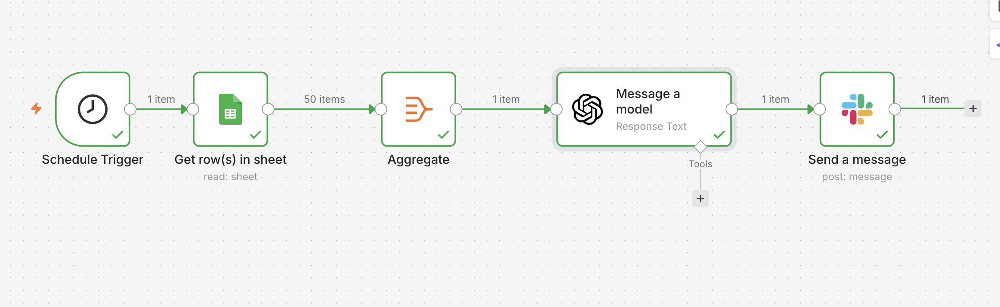
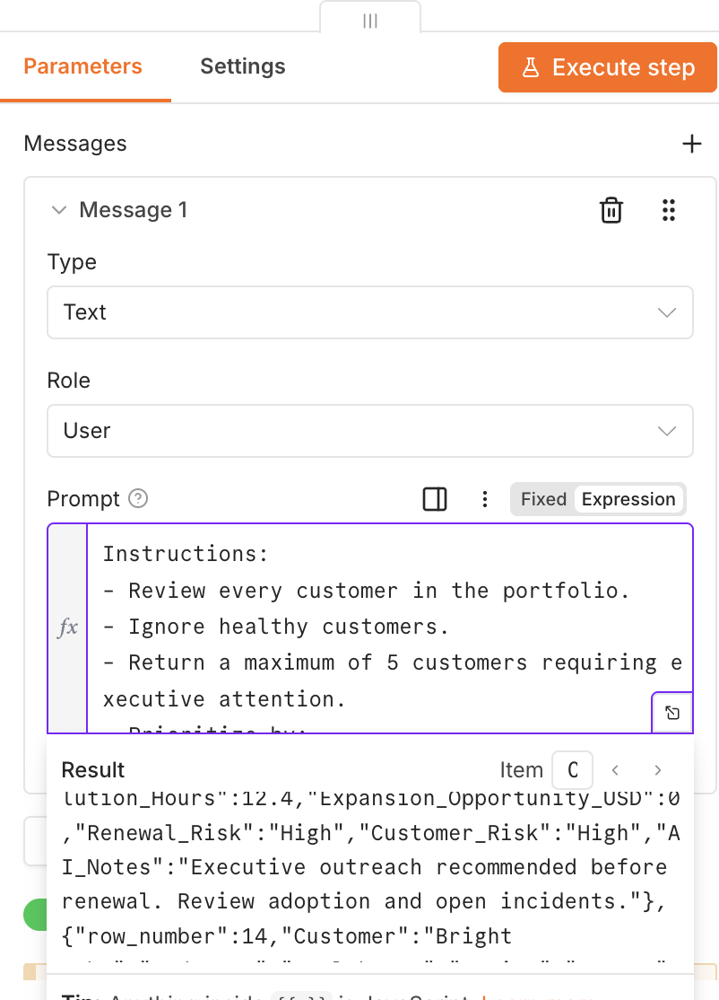
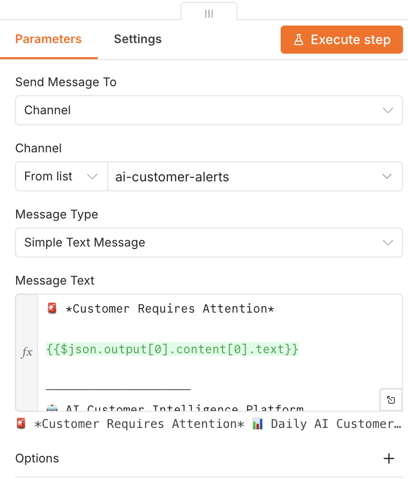
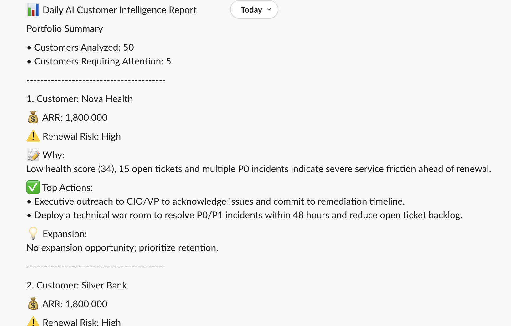

Business Problem
Customer Success teams spend hours reviewing health scores, support trends, product adoption, ARR, executive relationships, and renewal dates to determine which accounts require attention. Manual portfolio reviews are slow, inconsistent, and reactive.
Product Vision
Build an AI-powered Customer Intelligence Engine that analyzes an entire customer portfolio in a single workflow, identifies renewal risk, recommends executive attention, highlights expansion opportunities, and delivers a daily executive briefing before the team starts work.
Solution Architecture
Customer Portfolio
│
▼
Google Sheets
│
▼
Aggregate Customer Records
│
▼
AI Customer Intelligence Engine
├── Renewal Risk
├── Executive Attention
├── Portfolio Prioritization
├── Expansion Opportunity
├── Executive Summary
└── Recommended Next Actions
│
▼
Slack Executive Brief
Workflow
- Scheduled workflow starts automatically.
- Customer portfolio is read from Google Sheets.
- All customer records are aggregated into one AI request.
- GPT analyzes the complete portfolio.
- Highest priority accounts are identified.
- An executive-ready Slack report is generated.
Prompt Engineering Highlights
- Single portfolio-wide AI analysis.
- Renewal Risk classification.
- Executive Attention recommendation.
- Expansion Opportunity detection.
- Maximum five priority customers.
- Consistent executive-ready formatting.
Technology Stack
| Layer | Technology |
|---|---|
| Workflow | n8n |
| Customer Data | Google Sheets |
| AI Engine | OpenAI GPT |
| Notifications | Slack |
| Prompt Logic | Executive Portfolio Analysis Prompt |
Roadmap
- Salesforce Integration
- HubSpot Integration
- Gainsight Health Scores
- Customer 360 Dashboard
- Jira Escalations
- Executive Email Reports
- AI Success Copilot
- Predictive Churn Modeling
Business Value
- Daily portfolio visibility
- Earlier renewal risk detection
- Executive prioritization
- Reduced manual account reviews
- AI-powered customer intelligence
Workflow & Product Screenshots
1. Workflow Architecture
The workflow reads the customer portfolio from Google Sheets, aggregates all customer records into a single AI request, and automatically posts an executive summary to Slack.

2. AI Portfolio Analysis Prompt
The prompt instructs GPT to evaluate the entire portfolio, identify renewal risk, executive attention, recommended next actions, and expansion opportunities while returning only executive-ready insights.

- Portfolio-wide analysis
- Renewal Risk scoring
- Executive Attention flag
- Expansion Opportunity identification
- Executive summaries
- Slack-ready output
3. Slack Integration
The completed portfolio review is automatically delivered to Slack, giving leadership a prioritized list of customers requiring immediate attention.

- Automatic daily reporting
- Executive-ready formatting
- One AI call for the full portfolio
- Immediate visibility
4. AI-Generated Executive Customer Brief
The final output highlights only the customers requiring executive attention, reducing hours of manual portfolio review into a concise AI-generated executive briefing.

| Capability | Business Value |
|---|---|
| Renewal Risk | Identifies customers likely to churn. |
| Executive Attention | Flags accounts requiring leadership involvement. |
| Expansion Opportunity | Surfaces growth opportunities. |
| Recommended Actions | Provides actionable next steps. |
| Executive Summary | Summarizes each priority account in seconds. |
| Portfolio Prioritization | Focuses teams on the highest-value accounts. |
| AI Daily Brief | Delivers one executive report instead of reviewing every customer. |